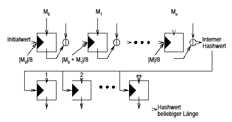
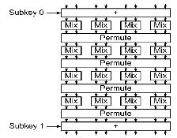

SHA 3 - Skein
Skein is a fast hash algorithm with a simple design built on Threefish.
Additionally Skein includes UBI (Unique Block Interaction) with Tweak.
Threefish is a n-bit block cipher with a Tweak of 128-bit. And so there are 3 possible hashbitlength: 256, 512 and 1024 bit.
Skein uses simple operations (add, rotate, xor). It also uses 64-bit words.
Additional information (Tweak) is also included in the block cipher. A counter for already used bytes and a field for the used type.
- The UBI mode for "Tweakable" block cipher
- Calculating a Sub - Hash

- Calculating an Output - Hash

- Threefish a block cipher with "Tweak"
- Threefish includes
- MIX - Operations
- Roundfunctions (72-80 rounds, after every forth round, a new round key will be added)
- The Key Schedule (out of the n-bit key and the 128-bit Tweak will be generated a 19-21 n-bit round key)

- Calculation the offset to 64-bit words
- Amortizes one clock cycle on the reference platform
- Rotating a data independent value (1 to 63)
- 4 rounds of Threefish-512
